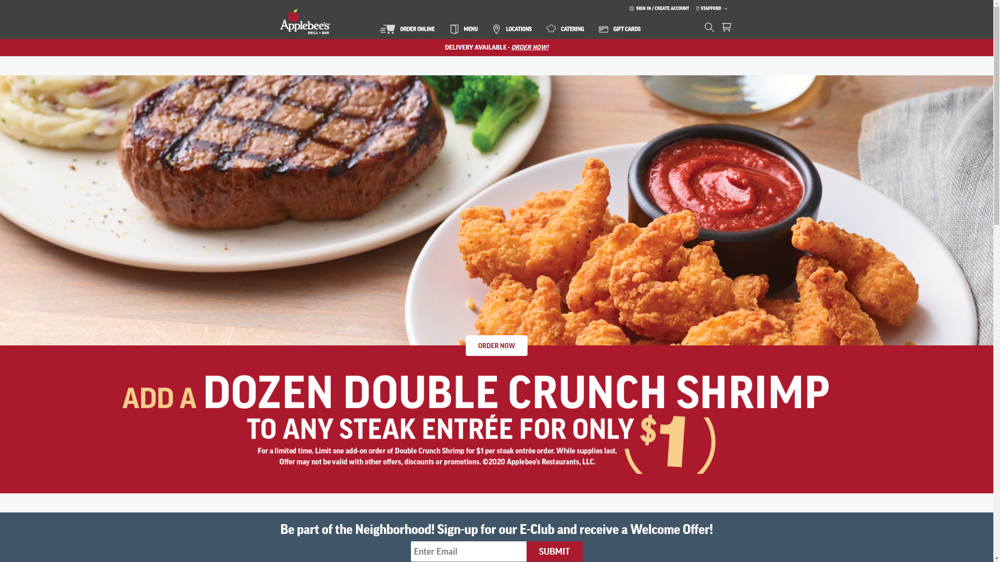
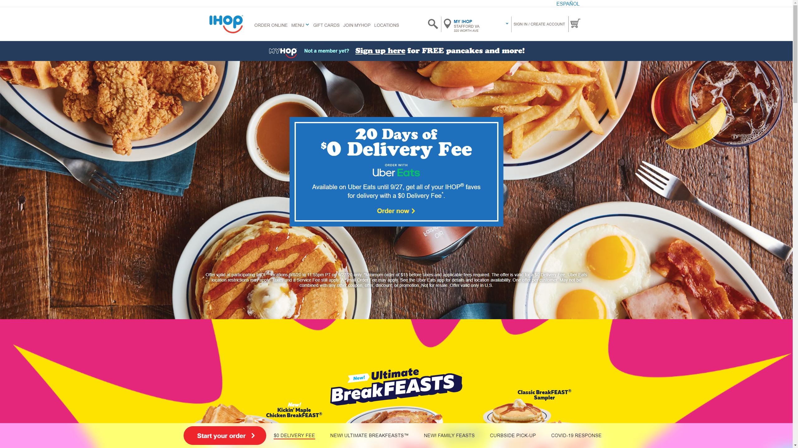
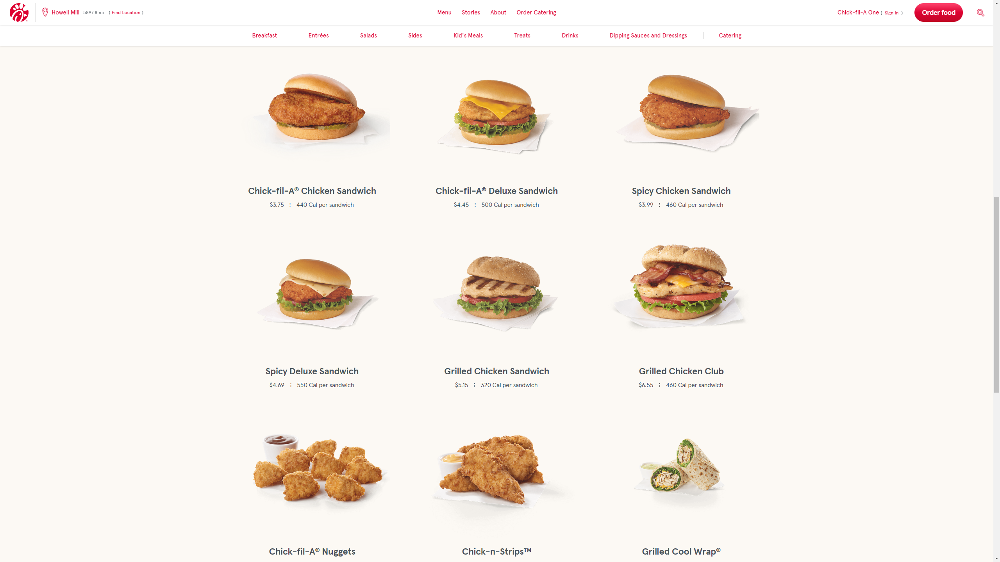
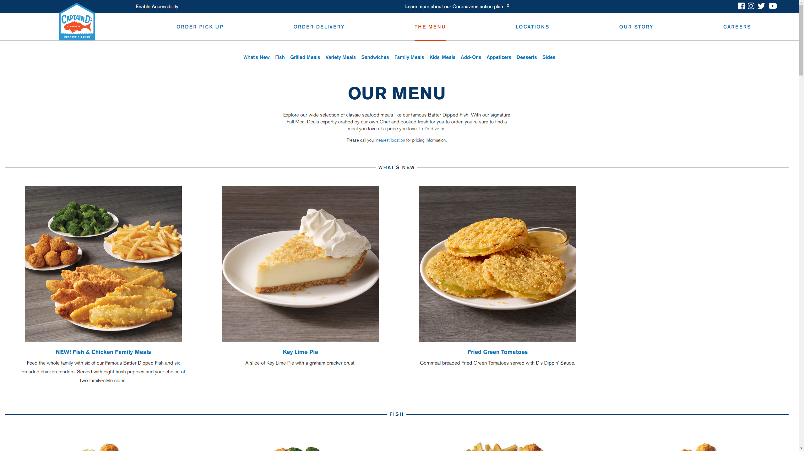

The site greets you with a sample of the pizza to expect. Each of the options of the site are well organized, with each function working well.
For this assignment, I wanted to look at the websites for some restaurants I have been to before and am familiar with.

This site is fairly straight forward to use. It immediately showcases the type of food one may expect, as well as the latest deal. The menu is easily accessible and well arranged.
The site greets you with a sample of the pizza to expect. Each of the options of the site are well organized, with each function working well.

The site opens with a clear appetizing image of the pancakes and other foods the restaurant is known for. From there, one can easily access the menu and other options such as finding a store, and each meal comes with a picture accompanying it so the customer knows what to expect.

The site is simple and clean like the restaurant itself is known to be. It does open with a large prompt for ordering online, but it is easy to go to the menu and begin ordering or picking out what to order when you get there, as well as find locations.

This site is responsive, stretching and shrinking its screen space based on the size of the window, and is fairly easy to navigat, providing pictures of the food in the menu, as well as easy access to the other options of the site, separating ordering for delivery and ordering for pickup to increase convenience.